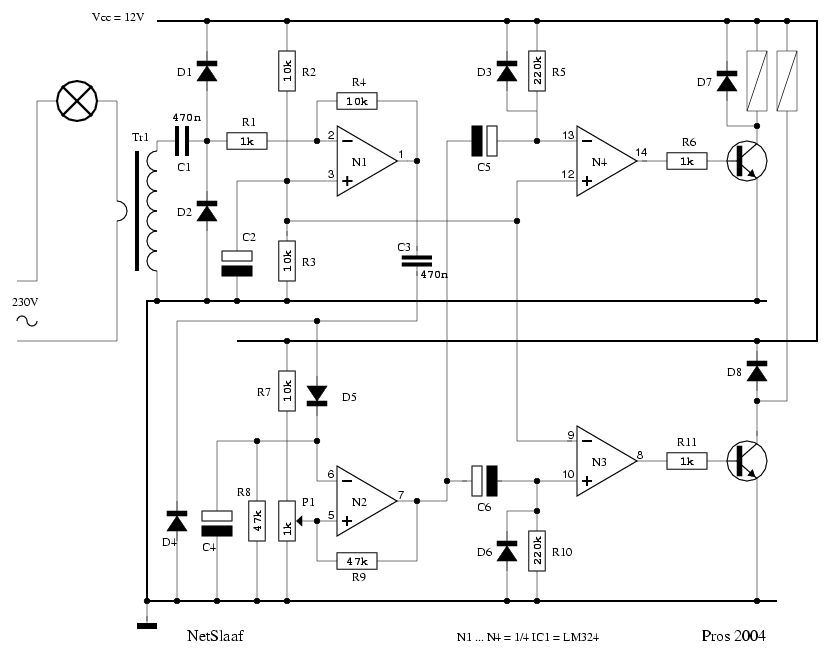
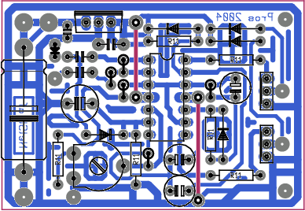
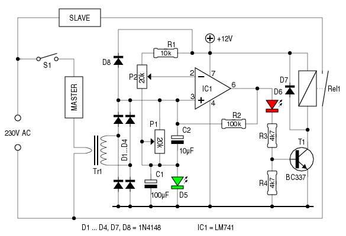
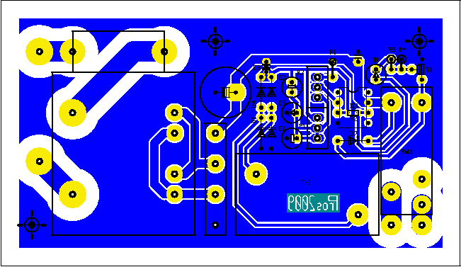
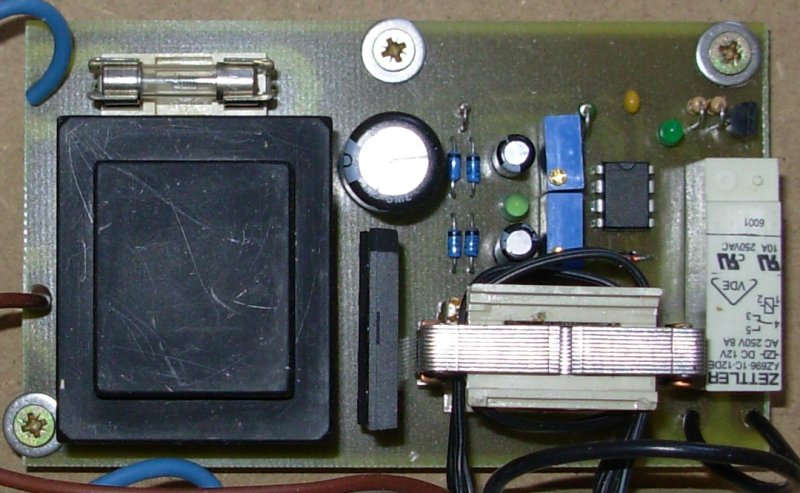
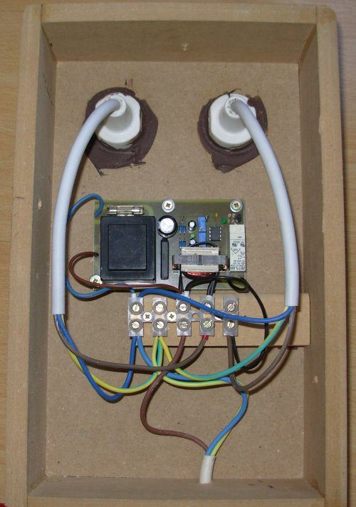
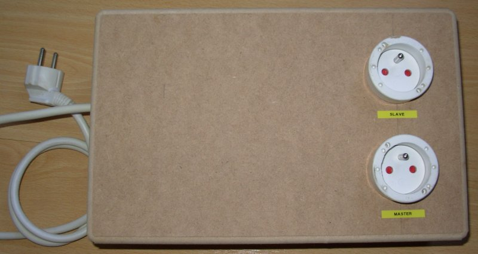
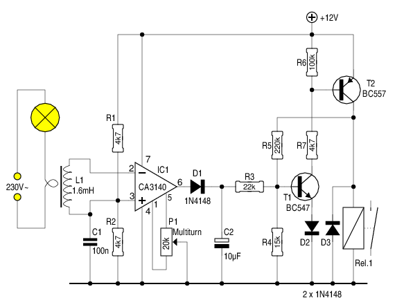
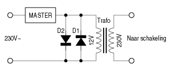

Wie graag met hout aan de slag gaat, weet dat zijn werkzaamheden
vaak een flinke hoeveelheid stof veroorzaken. Vooral schuren en
frezen zijn op dit punt bekende booswichten. De bekende oplossing
hiervoor bestaat uit een flinke stofzuiger, die op het
houtbewerkingsapparaat aangesloten wordt, en zoveel mogelijk van
het geproduceerde stof wegzuigt. Men moet dan wel de moeite nemen,
naast het apparaat ook de stofzuiger in- en uit te schakelen...
Het is precies die laatste taak, die overgenomen wordt door onze
NetSlaaf: zodra een apparaat ingeschakeld wordt, start automatisch
de stofzuiger; even na het uitschakelen van het apparaat, valt ook
de stofzuiger stil.
Het eerste dat we moeten doen, is dedecteren of er stroom vloeit
door de leiding waarop het “Master” apparaat is aangesloten.
Dat doen we met behulp van een stroomtrafo; een trafo waarvan
de primaire wikkeling uit 1 winding dikke draad bestaat, en de
secundaire wikkeling vele windingen telt. De primaire wikkeling
kan dan in serie met het “Master” apparaat geplaatst worden,
zonder merkbaar spanningsverlies te veroorzaken.
Wie graag wikkelt, weet dus wat hem te doen staat. Zelf heb ik een
niet-ingegoten trafo'tje uit de telefoniewereld genomen, en in
de beschikbare ruimte tussen de wikkelingen en de buitenkant van
de kern een wikkeling in draad van voldoende dikte gewurmd.

Op het schema hierboven is Tr1 de stoomtrafo. C1 laat enkel de
wisselstroomcomponent door. D1 en D2 beschermen opamp N1
tegen te hoge piekspanningen. Dit is beslist geen overbodige
luxe1
Bij het inschakelen (of het vastlopen) van een electromotor kunnen
immers stromen vloeien die aanzienlijk hoger liggen dan de
nominale stroom. Zolang de rotor niet draait, wordt er ook geen
tegen-emk2 opgewekt,
zodat de stroom hoofdzakelijk begrensd wordt door de ohmse
weerstand van de rotor- en de stator-wikkelingen.
N1 is als wisselspanningsversterker geschakeld; hij versterkt de
spanning van de stroomtrafo ± 10 x. Het versterkte
ingangssignaal laadt via C3 en diodepomp D4/D5 C4 op. N2
vergelijkt de spanning over C4 met een ingestelde waarde. Is de
spanning over C4 groter dan die op de loper van P1, dan wordt de
uitgang van N1 laag. Teneinde heen-en-weer klapperen te vermijden,
is R9 toegevoegd. Deze weerstand zorgt voor een zekere
hysteresis. R8 zorgt er op zijn beurt voor, dat C4 terug ontladen
wordt nadat het ingangssignaal is weggevallen.
De uitgang van N2 activeert ―naargelang hij hoog of laag wordt― of N3 of N4. In beide gevallen zorgen een elko (C6, C5) en een weerstand (R10, R5) er voor, dat die actieve toestand in de tijd beperkt wordt. D6 en D3 zorgen er voor, dat de spanning op de respectievelijke ingangen niet negatief kan worden. N3 en N4 drijven elk, via een transistor, een der wikkelingen van een bipolair relais aan. Een kortstondige puls op één der wikkelingen van zo'n relais heeft tot gevolg dat het de bijpassende stand aanneemt, en deze behoudt, ook nadat de puls is verdwenen.

Versie I werd voor een bistabiel relais ontworpen, omdat ik daar enkele exemplaren van in voorraad had. Nu is een gewoon relais eenvoudiger te bedienen, en tevens goedkoper. Daarom deze versie.

De stroomsensor bestaat hier uit de spoel van een 230V~ relais.
Deze spoel vormt de secundaire wikkeling.
De primaire wikkeling bestaat uit twee wikkelingen, waarvoor een
soort dikke flatcable gebruikt is. Deze is afkomstig
uit een afgedankte flatbed-scanner; de aders zijn heel wat
dikker dan bij een "gewone" flatcable. Samen zijn ze ruim
1.5mm2 dik, voldoende voor de aangesloten master - een
afkort-cirkelzaag in dit geval.
Na gelijkrichting door D1 ... D4 komt de opgewekte spanning over
C1 en C2 te staan.
Misschien is een woordje uitleg over C1 en D5
hier op zijn plaats:
Er werd gekozen voor een goedkope opamp, de LM741. Deze heeft
wel het nadeel, dat hij niet met lage ingangsspanningen overweg
kan. Door C1 en D5 toe te voegen worden de ingangsspanningen
1.8V omhoog getild (C1 wordt opgeladen door R1/P2), zodat de 741
tevreden gesteld wordt.
Als men gebruik maakt van een opamp die wèl overweg kan met
lage ingangsspanningen (CA3140, AD820) zijn C1 en D5 overbodig.
P1 en C2 worden dan rechtstreeks met GND verbonden.
P1 vormt de belasting voor diodebrug D1 ... D4. De opgewekte
spanning hangt immers af van de stroom die door de master vloeit
en van de karakteristieken van Tr1. Met P1 is het mogelijk, de
opgewekte spanning over C2 naar wens in te stellen.
Als blijkt, dat de stroomsensor een te lage spanning opwekt,
kunnen verschillende maatregelen genomen worden:
Deze uitgebreide instelmogelijkheden waren een noodzaak, omdat het master-apparaat voorzien is van een laser-uitlijning. Daardoor wordt er sowieso stroom verbruikt, en moet de NetSlaaf in staat zijn het verschil tussen deze ruststroom en die van een draaiende motor te herkennen.

Op de print vinden we nog enkele onderdelen terug, die niet op
het schema te zien zijn: een 9V-trafo, een glaszekering, een
gelijkrichterbrug en een elco (1000μF, 16V).
Een spanningsstabilisator is voor een toepassing als deze
overbodig.
De layout is ook beschikbaar in pdf-vorm:
De soldeerzijde
De componenten

Het bestukte printje.

Het geheel zit in een eenvoudige behuizing.
Wat opvalt, zijn de "stopcontacten". Deze vrouwelijke netsnoer-stekkers zijn heel wat goedkoper dan een inbouw-stopcontact, en voldoen net zo goed voor deze toepassing.

Zo ziet het er aan de buitenkant uit. Deze NetSlaaf hangt helemaal uit het zicht, dus kon een fancy afwerking achterwege blijven.

Als we deze stroomsensor en
deze Schmitt-trigger aan mekaar knopen, hebben
we een derde versie.
Wie even op de links klikt, kan daar lezen hoe beide onderdelen
werken.
De gebruikte stroomsensor heeft het voordeel, dat hij praktisch geen weerstand vormt in de stroomleiding. Wie geen gepaste spoel bij de hand heeft, of er weinig voor voelt om zoiets in mekaar te knutselen, kan dit alternatief overwegen:
 Hierbij wordt gebruik gemaakt van een kleine laagspanningstrafo, waarbij de laagspanningswikkeling over de dioden wordt aangesloten. Deze dioden beperken de ingangsspanning ―afhankelijk van het type en de stroom door de netleiding― tot ±1V. Het trafo'tje kan ook een 24V type zijn.
Nadeel bij deze methode is de spanningsval over de dioden. Deze dienen uiteraard geschikt te zijn voor de stroom die de master opneemt. Hou hierbij rekening met de startstroom bij motoren!